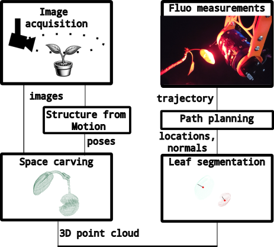

- 顶会/顶刊回看 3 篇：NVILA（CVPR 2025）、A Closer Look at Transformers for Time Series Forecasting（ICML 2025）、A Closer Look at Multimodal Representation Collapse（ICML 2025），均为非当日新增且不占主推荐名额。
Figure 1. Overview of the TraceBench framework using a bouncing-ball simulator. In this example, the black and orange segments show the position observation under the low-noise set...
Figure 1: Examples of the 0, 1, 2 and 3 classes taken from the N-MNIST dataset. A denoising process (explained later in Section 4.1 is applied before events are accumulated per-pix...
【P3】原始应用为植物表型；可迁移模块是用多视图 3D 图像先筛选可达且有信息的局部区域，再触发点式生理测量；对应“时序查询图像局部证据”和抑制无关视觉信息。几何重建与规划增加前处理计算和延迟，但能减少昂贵测量次数。风险是目标静态、没有缺模态训练和预警标签。最小实验是在可见光帧上用诊断异常分数选择局部 ROI，只对 top-k 区域编码，比较全帧融合的 AUC、提前量、峰值显存和 P95 延迟。
研究背景
由原简报的核心问题、选取理由和相关性整理，不替代原文背景综述。
仅靠被动图像难以测得生理状态，点式荧光更直接却昂贵，需要从视觉几何中选择值得测量的位置。
从本日报的选取理由看，【P3】原始应用为植物表型；可迁移模块是用多视图 3D 图像先筛选可达且有信息的局部区域，再触发点式生理测量；对应“时序查询图像局部证据”和抑制无关视觉信息。几何重建与规划增加前处理计算和延迟，但能减少昂贵测量次数。风险是目标静态、没有缺模态训练和预警标签。最小实验是在可见光帧上用诊断异常分数选择局部 ROI，只对 top-k 区域编码，比较全帧融合的 AUC、提前量、峰值显存和 P95 延迟。
核心问题
如何结合 3D 重建、几何约束和运动规划，自动选择并采集空间分辨的生理测量？
对当前主题的关键意义在于：原领域为植物主动感知；模块为视觉 ROI 与昂贵传感选择；对应时序查询图像局部证据；重建增加延迟但可省后续编码；风险是静态假设和无预警验证；最小实验是诊断引导 top-k ROI 编码并比较 AUC、提前量、显存和 P95 延迟。
方法与关键创新

Fig. 4: Summary of the perception and path planning pipeline.
从多视图重建稠密 3D 植物，按方向、可达性和传感约束筛选叶片目标，再规划无碰轨迹完成主动测量。
阅读时需要把方法设计与主要结果一起看：系统实现自动、可重复、空间分辨的叶片荧光采集；摘要未提供预测准确率或端到端延迟数字。
实验结果
系统实现自动、可重复、空间分辨的叶片荧光采集；摘要未提供预测准确率或端到端延迟数字。
局限性
静态机器人规划与实时破裂预警差异大；没有异步诊断、跨装置或不确定性评估。
总结
可迁移的是“先由时序需求选择视觉测量”，而非植物领域本身。
研究相关性与启发
原领域为植物主动感知；模块为视觉 ROI 与昂贵传感选择；对应时序查询图像局部证据；重建增加延迟但可省后续编码；风险是静态假设和无预警验证；最小实验是诊断引导 top-k ROI 编码并比较 AUC、提前量、显存和 P95 延迟。
02
在研课题启发 - P3：可见光图像与诊断时序融合的破裂预测
软夹爪的视觉—红外—物理时序联合感知
Relaxation-Aware Multimodal Sensing of Soft Gripper Driven by Structure-Perception-Learning
Fig. 2: Overview of the single-finger architecture and multi-mode grasping configurations. The exploded view illustrates the compliant skeletal architecture of a single finger, hig...
板载视觉与红外连续跟踪形变和温度场，构建温度耦合黏弹力表示，以物理信息学习模型预测并补偿力衰减。
阅读时需要把方法设计与主要结果一起看：280 秒抓持任务的力 MAE 为 0.066 N，相对固定开度和只看瞬时状态的基线分别改善 80% 与 95%。
实验结果
280 秒抓持任务的力 MAE 为 0.066 N，相对固定开度和只看瞬时状态的基线分别改善 80% 与 95%。
Figure 7: VRH detection consistency across same-backbone VLMs. Each block is a pair of VLMs that share a language backbone but differ in vision encoder, projector and instruction t...
Figure 1: We introduce CLAP , a cross-embodiment learning framework that trains action-conditioned video models on diverse human and robot video data to learn fundamental physical ...
Figure A9 : Qualitative Comparison on the A-D-R Benchmark (1s Gap). Existing autoregressive models exhibit myopic attention bias, altering the geometry and texture of the subject (...
![Figure 1. Overview of the TraceBench framework using a bouncing-ball simulator. In this example, the black and orange segments show the position observation under the low-noise setting before and after an intervention at t int = 4.0 t_{\mathrm{int}}=4.0 . The intervention increases gravitational acceleration, and the dashed line marks the intervention time. At test time, the agent determines from the observed time-series channels whether an intervention occurred and, if so, which parameter changed. \name{} pipeline: a physical simulator produces multivariate time series before and after a parameter intervention; the low-noise BallDrop position observation is black before and orange after a dashed gravity-intervention marker; the agent identifies the changed root-cause parameter.](../assets/figures/44654e66bd9c8e8a.png)
![Figure 7: VRH detection consistency across same-backbone VLMs. Each block is a pair of VLMs that share a language backbone but differ in vision encoder, projector and instruction tuning: Qwen2.5-VL-7B [ 6 ] with InternVL3-8B [ 8 ] , which share a Qwen2.5-7B backbone; Qwen3-VL-8B [ 7 ] with InternVL3.5-8B [ 9 ] , which share a Qwen3-8B backbone; and Magma-8B [ 27 ] with LLaVA-NeXT-Llama3-8B [ 28 ] , which share a Llama-3 backbone. Top row: Layer-head score maps, where each cell denotes the VRH score Θ ¯ l , h \bar{\Theta}_{l,h} at layer l l and head h h ; high-scoring heads appear at similar layer-head locations across same-backbone VLMs. Bottom row: Cross-model masking results, where the top-k VRHs identified in one model are masked at the same layer-head indices in the other model. Own VRHs are the heads detected in the panel’s own model and transferred VRHs those detected in its partner. The x-axis denotes the number of masked heads (k).](../assets/figures/8500752e6b3ddc70.png)